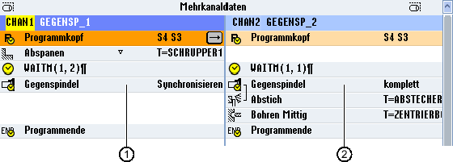

Bei Mehrkanalmaschinen ist es erforderlich Gegenspindelschritte über alle Kanäle zu synchronisieren.
Die Behandlung der Gegenspindel programmieren Sie in einem Kanal. Dieser Kanal steuert die Bewegung der Gegenspindel und passt die Nullpunktverschiebung des Kanals an.
Im Synchronisationsschritt parken die anderen Kanäle ihre Werkzeuge, um Kollisionen zu vermeiden. Dabei wird auch die Nullpunktverschiebung übernommen.
① | Synchronisationsschritt |
② | Gegenspindelschritt |
Folgende Gegenspindelschritte, die implizit WAIT-Marken enthalten, werden mit einem Symbol kenntlich gemacht:
Ziehen (NP mitziehen = ja)
Bearbeitungsseite
komplette Übernahme
Synchronisieren
Siehe auch:
Gegenspindel synchronisieren - 2-kanalig